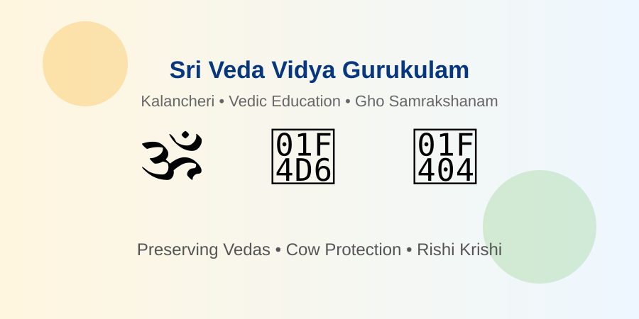

🍛
Akshaya Trust
Supports food, shelter, care, and dignity for people in need through compassionate community service.
Discover NGOs by cause, location, and verification status.
Helpora can include both FCRA and non-FCRA organizations as long as the donation eligibility is clearly shown to donors.
Organizations that have verified FCRA eligibility for receiving foreign contributions.
Genuine organizations may serve important causes but only accept domestic India donations unless otherwise verified.
Listings where registration, donation eligibility, or documents are still being reviewed.
Phase 1 intentionally lists only the Akshaya Trust. More NGOs will be added after Helpora completes its verification process in Phase 2.
Categories included: Education, Food & Shelter, Children, Elderly Care, Disability Support, Rural Development, Women Empowerment, and Vedic & Cultural Education.

Preserving Veda, Vaidika Dharma, cow protection, and Vedic agriculture at Kalancheri, Thanjavur.
Location: Thanjavur, Tamil Nadu, India
Cause: Vedic Education, Gho Samrakshanam, Rishi Krishi
FCRA: Not verified on Helpora; listed as India Donations Only
Supports food, shelter, care, and dignity for people in need through compassionate community service.